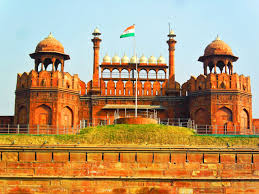

Iconic Monuments
India is home to some of the most awe-inspiring landmarks in the world. These monuments reflect its rich cultural heritage and historical significance:
- Taj Mahal: Located in Agra, this symbol of eternal love is one of the Seven Wonders of the World.
- Red Fort: A UNESCO World Heritage site in Delhi, showcasing Mughal architecture.
- Hawa Mahal: Known as the "Palace of Winds", this Jaipur marvel is famous for its intricate latticework.
- Charminar: An iconic mosque in Hyderabad and a masterpiece of Indo-Islamic architecture.

Emperor Shah Jahan commissioned construction of the Red Fort on 12 May 1639, following his decision to shift his capital from Agra to Delhi. Originally adorned in red and white, the favorite colors of Emperor Shah Jahan, the design of the Red Fort is attributed to the architect Ustad Ahmad Lahori, renowned for his work on the Taj Mahal. The fort straddles the Yamuna River, which fed the moats surrounding most of the walls.
In 1760, the Marathas stripped and melted the silver ceiling of the Diwan-i-Khas to raise funds for the defence of Delhi from the armies of Ahmed Shah Durrani. In 1761, after the Marathas lost the third battle of Panipat, Delhi was raided by Ahmed Shah Durrani. Ten years later, the Marathas, acting at the behest of the exiled Emperor Shah Alam II, recaptured Delhi from the Rohilla Afghans.
Indian States and Capitals
India is union of states, each with its unique cultur and geographical identity. Here's a detailed table listing some Indian states, their capitals, and key data:
| State | Capital | Area (in km2) | Official Language | |
|---|---|---|---|---|
| Urban | Rural | |||
| Gujarat | Gandhinagar | 1,764 | 185,933 | Gujarati |
| Maharashtra | Mumbai | 307,713 | 70,940 | Marathi |
| Rajasthan | Jaipur | 342,239 | NA | Hindi |
Fun Fact
Did you know? India has largest postal network in the world, with over 1,50,000 post office, including one located on a floting structure in Dal Lake, Srinagar.

Dal (Urdu pronunciation: [ɖəl] ; Kashmiri pronunciation: [ɖal]) is a freshwater lake in Srinagar, the summer capital of Jammu and Kashmir in Indian-administered Kashmir. It is an urban lake, the second largest lake in Jammu and Kashmir, and the most visited place in Srinagar by tourists and locals. It is integral to tourism and recreation in the Kashmir valley and is variously known as the "Lake of Flowers", "Jewel in the crown of Kashmir" or "Srinagar's Jewel".
Dal is mentioned as Mahasarit (Sanskrit: महासरित्) in ancient Sanskrit texts. Ancient history records mention that a village named Isabar to the east of Dal was the residence of goddess Durga. This place was known as Sureshwari on the bank of the lake, which was sourced by a spring called the Satadhara. The name "Sureshwari" refers to the goddess Parvati, suggesting that the lake was once considered sacred and possibly associated with the goddess.
Contact us at : info@incredibleindia
© 2025 Incredible India Project. All right reserved.
Go to Navigation